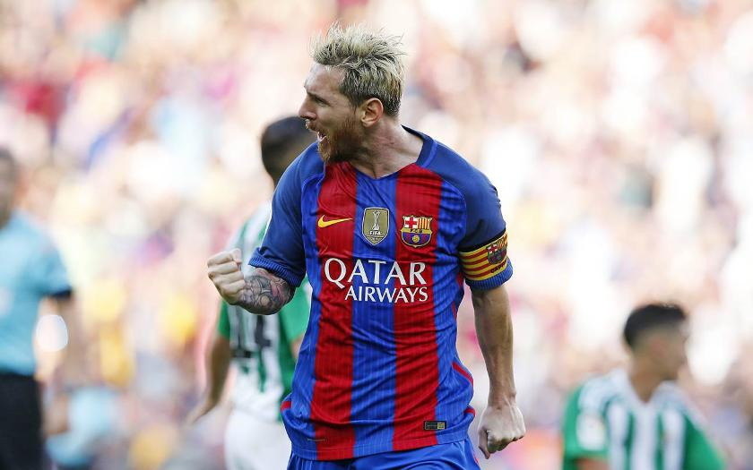

LIONEL MESSI
- The player who broke all football records -

The G.O.A.T Lionel Messi celebrating a goal with his team FC Barcelona against Real Betis in La Liga in 2016/2017 season
Here is why Messi deserves the title of the G.O.A.T
- Barcelona’s number 10, Messi has already recorded the most titles (34), most wins, most goals (672) and most assists (288) for the Catalan giants in the 121-year old history of the La Liga powerhouse.
- Messi is the only footballer to win four prestigious awards : Ballon d’Or, FIFA World Player, Pichichi Trophy and Golden Boot in a single season. He achieved the feat during the 2009/10 campaign.
- He is the only player to win six Ballon d’Or (2009, 2010, 2011, 2012, 2015 and 2019) awards in the history of the game. The second spot on this list is reserved by Portuguese great Cristiano Ronaldo, who has won the prestigious trophy five times.
- Messi is the only footballer to win six Golden Shoes. He was awarded the accolade in 2009-10, 2011-12, 2012-13, 2016-17, 2017-18 and 2018-19 seasons.
- Messi holds the record for being the youngest player to score 100 goals for Barcelona in official matches. He achieved the feat in 2010 and at that time he was just 22-year-old.
- Messi was the youngest player to net 200 goals for Barca.
- Messi also holds the record for the most number of goals in a singles calendar year. In 2012, Messi scored 91 goals, 79 with Barça (59 in La Liga, 13 in the Champions League, 5 in the Copa del Rey and 2 in the Spanish Super Cup) and 12 for Argentina.
- He also holds the record for the greatest goal scorer for a single club by surpassing Brazilian legend Pelé, who scored 643 goals for Santos between 1956 and 1974.
- As of June 22, Messi has netted 672 goals for Barca.
If you have time, you should read more about this incredible football player on his Wikipedia entry.